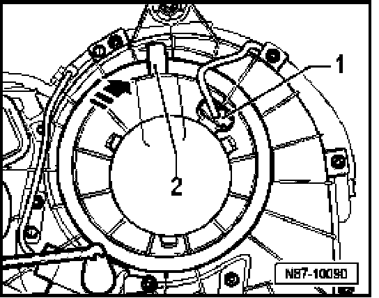

Rear Blower Regulation Motor (Bitron) -V306-, Removing and Installing
Rear Blower Regulation Motor (Bitron) -V306-, Removing And Installing
Removing
- Bring rear heating and A/C unit into service position.

- Disconnect electrical connection -1- at motor.
- Lift latch slightly -2- and rotate motor assembly in direction of -arrow-.
- Remove motor from housing.
Installing
Install in reverse order of removal, noting the following:
NOTE: After returning rear heating and A/C unit from service position, always ensure proper installation of rear evaporator water drain hose/valve.